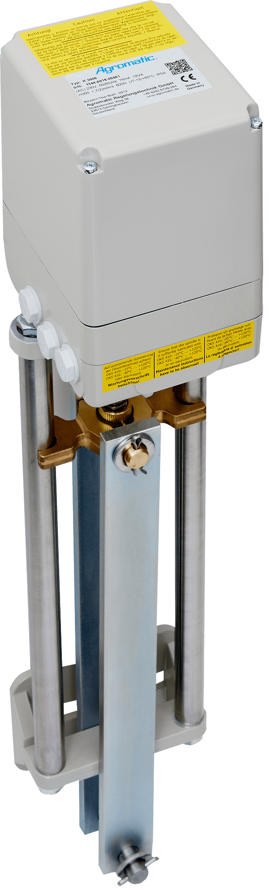

standard stroke
K linear actuator
Robust linear actuator for standard strokes in industrial applications.
- Thrust force
- 600–5,000 N
- Stroke range
- 150–750 mm
- Speed
- depending on design and load
- Voltage
- 230 V AC, 115 V AC, 24 V AC, 400 V AC, 24 V DC
- Protection class
- IP65, optional IP66/67